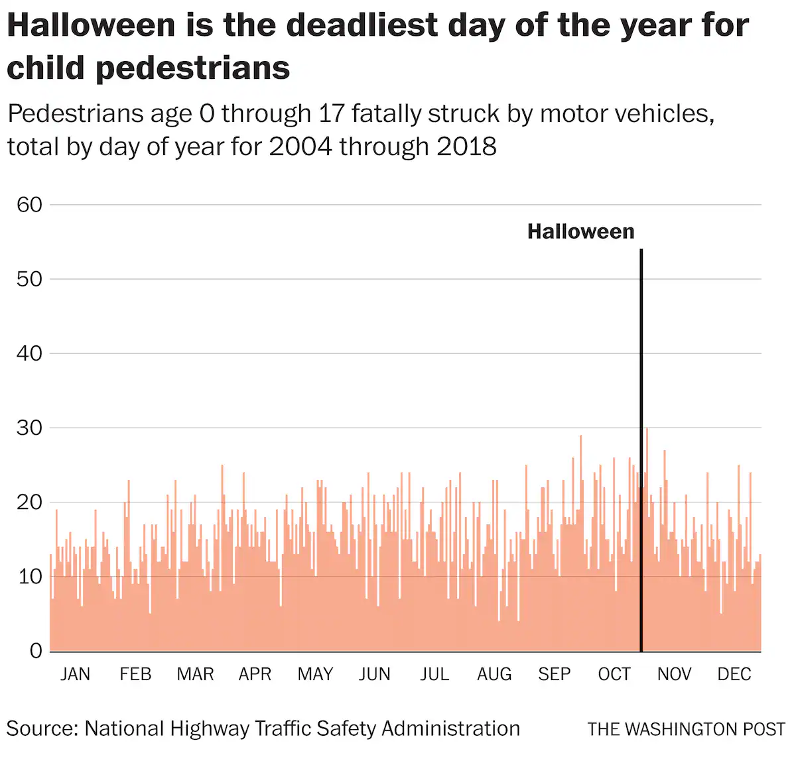

Testimony given at the Public Hearing on B25-0296, the Prioritizing People in Planning Amendment Act of 2023, and B25-0283, the Trick-or-Streets Amendment Act of 2023, as prepared for delivery. Text submitted to the record is available online from Council’s Legislative Information Management System (LIMS) Hearing Record (PDF).
The Pedestrian Advisory Council (PAC) was created by DC law in 2009 to advise “the Mayor, Council… and District agencies” on how to improve “pedestrian safety and accessibility.”1 I am J. Swiderski, and I represent Ward 1 on the PAC.
1 —DC Law 18-111, § 6061 (“Pedestrian Advisory Council Establishment Act of 2009”), DC Code §50–1931, 57 DCR 181 (Mar. 3, 2010).
Every year, the crash injuries and deaths of children on Halloween are far above the United States’ already-horrific normal. As a 2019 Washington Post story said, “children are three times more likely to be struck and killed by a car on [Halloween] than any other day of the year.”

We should be doing everything possible to minimize the risk of crash death and serious injury, especially for our youngest neighbors. However, this doesn’t mean swaddling our children in blankets and parents’ arms, or wrapping every costume, bike, tree, and house in reflective tape and paint, it means restricting the use and speed of vehicles near our kids. And on Halloween, when there are many more children out, we need to take many more steps to rein in the scariest part of the night: The cars, and their drivers. We whole-heartedly endorse this program to allow neighbors to close their streets to traffic on Halloween in order to expand the area in which kids can walk and play, and hope it can be extended or expanded upon to create similar neighborhood-street play zones throughout the year without the enormous cost and idling-dump-truck presence of Open Streets events.
DDOT and Council may need to do extra work to make sure that families and neighborhoods in some areas of the District are aware of this opportunity and able to take advantage of it. Council and the Department should consider working with DCPS and PTOs, the Library, and Parks & Rec to get the message to parents through their kids, as well as with ANCs, neighborhood associations, and others.
Turning to the Prioritizing People in Planning Amendment Act, we have been looking forward to the reintroduction of this bill. As we have said — repeatedly2 — “‘effective implementation of Vision Zero requires a fundamental, systemic paradigm shift away from the traditional engineering standards that have ruled our lives for decades.’ We continue to look forward to the District finally making that fundamental, systemic shift” — and if DDOT can’t make that shift on its own, or the Mayor’s Office won’t allow it to, perhaps the Council needs to push it. The Prioritizing People in Planning Amendment Act of 2023 is a good, hearty shove in the direction the Department needs to go.
2 Including in our testimony on the Walk Without Worry and Safe Routes to School Expansion bills (March 14, 2022); Testimony at DDOT FY 2022 Budget Hearing (June 10, 2021); Statement Supporting the Vision Zero Omnibus of 2019 (Sept. 1, 2020); Testimony to the Public Roundtable on Implementation of the Vision Zero Initiative and the Bicycle and Pedestrian Safety Amendment Act of 2016 (September 27, 2018); and others.
We have discussed several times before this Committee, including at this month’s ATE enforcement hearing, the deep, motorist-oriented bias that pervades the Department’s decisionmaking. We have told this Committee several times, such as in our 2021 testimony on DDOT’s FY22 budget,3 how pedestrian infrastructure in particular remains underinvested-in in the District. DDOT even continues to prioritize space for high-speed motor vehicles over space for people walking and rolling, in places where DDOT’s own plans and studies say people walking and rolling should be prioritized. We see this, for example, on Michigan Avenue Northeast near Catholic University, subject of DDOT’s 2016 “Crosstown Multimodal Transportation Study,” where students and other pedestrians walking along the edge of the university’s campus must share a narrow, root-heaved sidewalk with people biking between the Irving Cycletrack and Met Branch Trail, all while 22 thousand cars spread across six lanes, enough space for over 50 thousand cars a day. Someday, we are told, DDOT and Catholic University will build a better sidepath and pedestrians and cyclists will get to share a little more space—while drivers give up nothing.
3 DC PAC. Testimony at DDOT FY 2022 Budget Hearing (June 10, 2021)
We see this too on 11th Street Southeast near the Navy Yard, where DDOT has not only been looking to widen highway ramps exiting the Southeast Freeway, but would like to remove space from the sidewalk in order to add protected bike lanes without taking space from cars, and has proposed narrowing the pedestrian crossing refuge to its minimum allowable size in order to add a second left turn lane.4
4 Janezich, Larry. “ANC6B Slams DDOT’s Pedestrian/Bike Safety Plan for 11th Street & I-695 SE Intersection.” Capitol Hill Corner, April 16, 2021.
Let that sink in. In order to keep people riding bikes between Capitol Hill and Downtown Anacostia safe from motor vehicles, the District literally has proposed, in this decade, taking space from pedestrians, because space for cars is sacrosanct. In order to speed traffic from Anacostia to Navy Yard, the District has proposed, in this decade, taking space from pedestrians, because the free flow of traffic is sacred.
We must stop prioritizing cars at all costs. We must start Prioritizing People in Planning.
Citation
@online{swiderski2023,
author = {Swiderski, J. I. and Swiderski, J. I.},
title = {Testimony of the {DC} {Pedestrian} {Advisory} {Council} to
{DC} {Council,} {October} 26, 2023},
date = {2023-10-26},
url = {http://swiderskiji.github.io//posts/2023-10-26-PAC-testimony.html},
langid = {en}
}